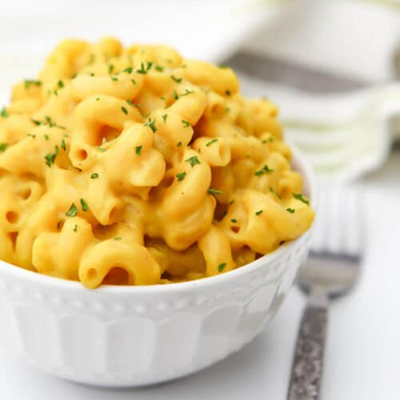

Mac and Cheese

Description
This incredibly creamy and cheesy homemade mac and cheese is great on its own or as a jumping off point for your own creation.
Ingredients
- 8oz macaroni
- 3 Tbsp Butter
- 3 Tbsp all-purpose flour
- 1/2 tsp onion powder
- 2 cups whole milk
- 1/2 tsp hot sauce
- 1/2 tsp salt
- 8oz. block sharp cheddar, shredded